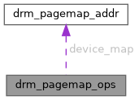

|
XenevaOS
|
#include <drm_pagemap.h>

Public Attributes | |
| struct drm_pagemap_addr(* | device_map )(struct drm_pagemap *dpagemap, struct device *dev, struct page *page, unsigned int order, enum dma_data_direction dir) |
| void(* | device_unmap )(struct drm_pagemap *dpagemap, struct device *dev, const struct drm_pagemap_addr *addr) |
| int(* | populate_mm )(struct drm_pagemap *dpagemap, unsigned long start, unsigned long end, struct mm_struct *mm, unsigned long timeslice_ms) |
| void(* | destroy )(struct drm_pagemap *dpagemap, bool is_atomic_or_reclaim) |
struct drm_pagemap_ops: Ops for a drm-pagemap.
| void(* drm_pagemap_ops::destroy) (struct drm_pagemap *dpagemap, bool is_atomic_or_reclaim) |
@destroy: Destroy the drm_pagemap and associated resources. @dpagemap: The drm_pagemap to destroy. @is_atomic_or_reclaim: The function may be called from atomic- or reclaim context.
The implementation should take care not to attempt to destroy resources that may already have been destroyed using devm_ callbacks, since this function may be called after the underlying struct device has been unbound. If the implementation defers the execution to a work item to avoid locking issues, then it must make sure the work items are flushed before module exit. If the destroy call happens after the provider's pci_remove() callback has been executed, a module reference and drm device reference is held across the destroy callback.
| struct drm_pagemap_addr(* drm_pagemap_ops::device_map) (struct drm_pagemap *dpagemap, struct device *dev, struct page *page, unsigned int order, enum dma_data_direction dir) |
| void(* drm_pagemap_ops::device_unmap) (struct drm_pagemap *dpagemap, struct device *dev, const struct drm_pagemap_addr *addr) |
@device_unmap: Unmap a device address previously obtained using @device_map.
@dpagemap: The struct drm_pagemap for the mapping. @dev: The device unmapper. @addr: The device address obtained when mapping.
| int(* drm_pagemap_ops::populate_mm) (struct drm_pagemap *dpagemap, unsigned long start, unsigned long end, struct mm_struct *mm, unsigned long timeslice_ms) |
@populate_mm: Populate part of the mm with @dpagemap memory, migrating existing data. @dpagemap: The struct drm_pagemap managing the memory. @start: The virtual start address in @mm @end: The virtual end address in @mm @mm: Pointer to a live mm. The caller must have an mmget() reference.
The caller will have the mm lock at least in read mode. Note that there is no guarantee that the memory is resident after the function returns, it's best effort only. When the mm is not using the memory anymore, it will be released. The struct drm_pagemap might have a mechanism in place to reclaim the memory and the data will then be migrated. Typically to system memory. The implementation should hold sufficient runtime power- references while pages are used in an address space and should ideally guard against hardware device unbind in a way such that device pages are migrated back to system followed by device page removal. The implementation should return -ENODEV after device removal.
Return: 0 if successful. Negative error code on error.